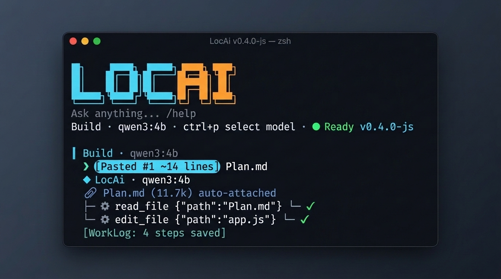
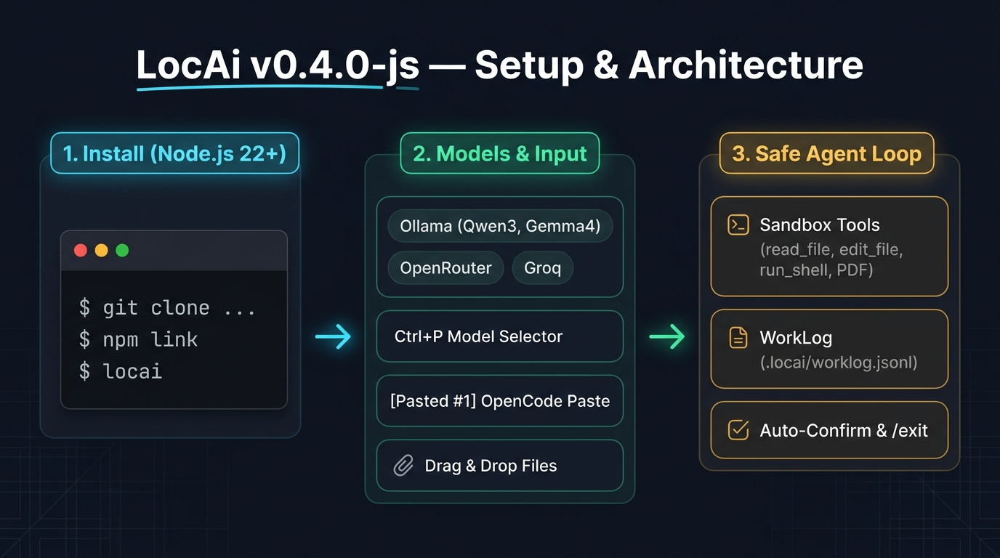

Small Local Models.
Real Coding Agents.
LocAi v0.4.0-js is a lightweight local AI terminal coding agent supporting Ollama, OpenRouter, Groq, and NVIDIA NIM — built with OpenCode-style paste, drag-and-drop file attachment, PDF reading, and persistent WorkLog memory.

Key Features
Engineered so small local models (0.6B–4B) can work reliably on real projects.
📋 OpenCode-Style Paste
Multi-line or long pastes never auto-submit on newlines; they collapse into a [Pasted #1 ~N lines] pill and expand cleanly on Enter.
🧠 Persistent WorkLog Memory
Saves every goal and tool step to .locai/worklog.jsonl inside your project folder and auto-injects it when context gets pruned.
📎 Drag-and-Drop & PDF Support
Drop any local file path into the prompt to auto-attach its contents. .pdf files are extracted automatically via pdftotext.
🛠️ Tool Repair & Sandbox
Repairs malformed XML/JSON tool calls (repair.js), enforces workspace sandboxing, and shows closest lines when edit_file misses.
⚡ Auto-Confirm & Smooth REPL
Auto-approves tool actions by default (disable with --no-auto-confirm), waits for your next command after completion, and exits cleanly with /exit.
🔀 Ctrl+P Model Selector
Switch seamlessly between local Ollama models and OpenRouter, Groq, NVIDIA NIM, or NineRouter using arrow keys.
Installation
Make sure Node.js 22+ is installed first (node -v). If not, install it below and link the CLI.
# 0. Install Node.js 22+ first if not already installed: # Linux: curl -o- https://raw.githubusercontent.com/nvm-sh/nvm/v0.40.1/install.sh | bash && nvm install 22 # macOS: brew install node@22 # Windows: winget install OpenJS.NodeJS.LTS (or nodejs.org) # 1. Clone the repository and link the global CLI git clone https://github.com/ilhanakd-max/Local_Ajan.git cd Local_Ajan npm link # 2. Verify version and pull a local model locai --version ollama pull qwen3:1.7b # 3. Launch in any project directory cd /path/to/your/project locai

Usage & REPL Commands
Essential shortcuts and slash commands available inside the interactive session:
| Command / Shortcut | Description |
|---|---|
Ctrl+P | Open interactive arrow-key model selector |
/model [name] | Switch active model or list available models |
/log / /log clear | View or clear project work log (.locai/worklog.jsonl) |
/ponytail | Toggle minimalist coding mode (zero over-engineering) |
/save <name> / /load <name> | Save or restore conversation sessions |
/exit | Exit the CLI cleanly |